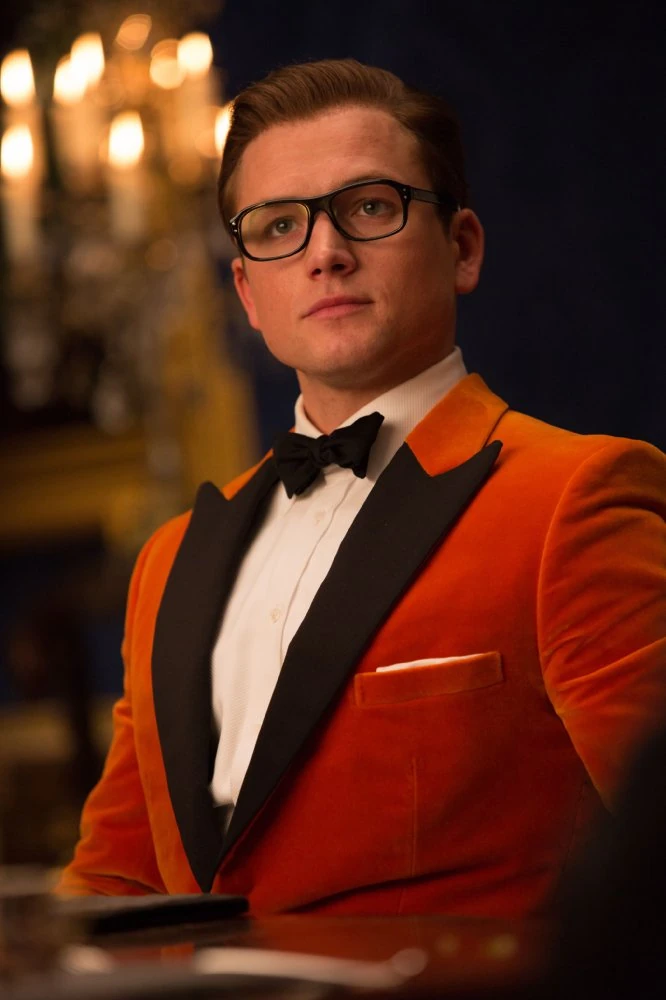

Eggsy in Kingsman

Eggsy
is very touching. He almost went to the Olympics, had a great record in the Marines but had to give up those opportunities for his family.
Finally, he become the Kingsman and the top spy.
- He overcomes his underprivileged background with determination and intelligence.
- His loyalty to his friends and family shows his strong moral compass.
- Eggsy's quick learning and adaptability make him an excellent Kingsman agent.